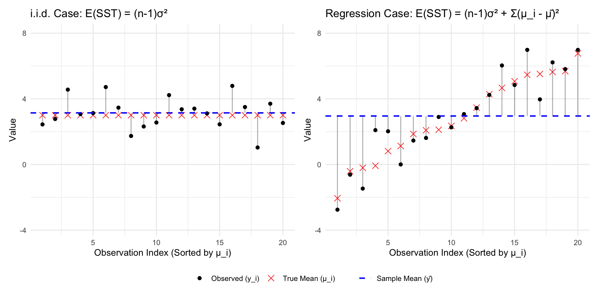
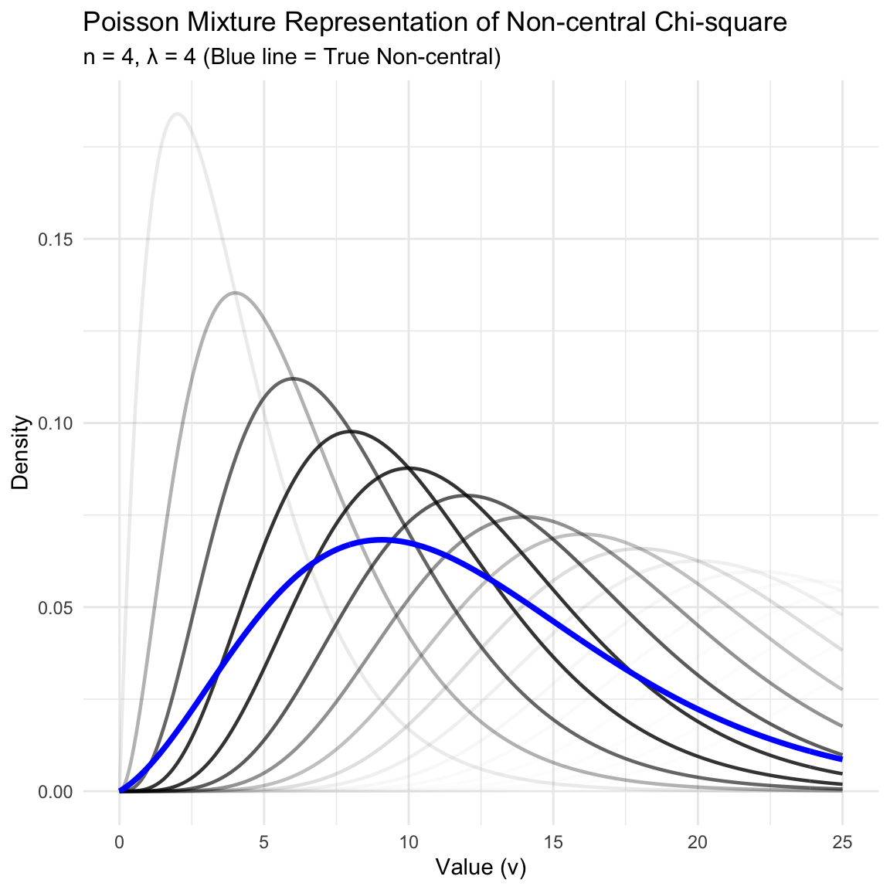
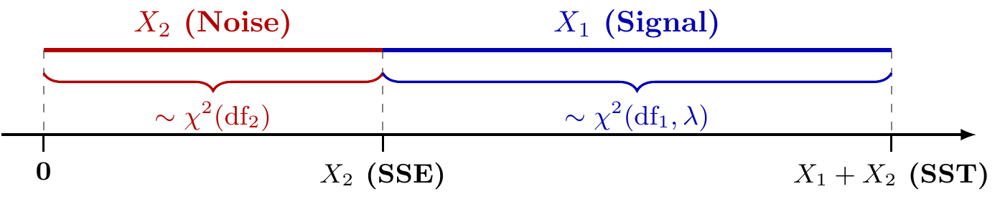

This chapter covers the distribution of quadratic forms (sums of squares), which is crucial for hypothesis testing in linear models.
5.1 Quadratic Forms
A quadratic form is a polynomial with terms all of degree two.
Definition 5.1 (Quadratic Form) Let \(y = (y_1, \dots, y_n)'\) be a random vector and \(A\) be a symmetric \(n \times n\) matrix. The scalar quantity \(y'Ay\) is called a quadratic form in \(y\).
Squared Norm: If \(A = I_n\), then \(y'I_n y = y'y = \sum y_i^2 = ||y||^2\).
Weighted Sum of Squares: If \(A\) is diagonal with elements \(\lambda_i\), then \(y'Ay = \sum \lambda_i y_i^2\).
Projection Sum of Squares: If \(P\) is a projection matrix, \(||Py||^2 = (Py)'(Py) = y'P'Py = y'Py\) (since \(P\) is symmetric and idempotent).
5.2 Mean of Quadratic Forms
We can find the expected value of a quadratic form without assuming normality.
Lemma 5.1 (Mean of Simplified Quadratic Form) If \(y\) is a random vector with mean \(E(y) = \mu\) and covariance matrix \(\text{Var}(y) = I_n\), then: \[
E(y'y) = \text{tr}(I_n) + \mu'\mu = n + \mu'\mu
\]
Proof. Let us decompose \(y\) into its mean and a stochastic component: \(y = \mu + z\), where \(E(z) = 0\) and \(\text{Var}(z) = E(zz') = I_n\). Substituting this into the quadratic form: \[
\begin{aligned}
y'y &= (\mu + z)'(\mu + z) \\
&= \mu'\mu + \mu'z + z'\mu + z'z \\
&= \mu'\mu + 2\mu'z + z'z
\end{aligned}
\] Taking the expectation: \[
\begin{aligned}
E(y'y) &= \mu'\mu + 2\mu'E(z) + E(z'z) \\
&= \mu'\mu + 0 + E\left(\sum_{i=1}^n z_i^2\right)
\end{aligned}
\] Since \(\text{Var}(z_i) = E(z_i^2) - (E(z_i))^2 = 1 - 0 = 1\), we have \(E(\sum z_i^2) = \sum 1 = n\). Thus, \(E(y'y) = n + \mu'\mu\).
Code
library(ggplot2)library(MASS)library(dplyr)# --- 1. Setup Data & Parameters ---set.seed(42)n <-100sigma_val <-1Sigma <-diag(2) * sigma_val^2mu_orig <-c(5, 6) # Original Meany_orig <-c(7, 5) # Updated Point y# Generate 100 Points from N(mu, I)data_orig <-mvrnorm(n, mu_orig, Sigma)# Define Rotation Anglesangles <-c(0, 70, 180)# --- 2. Process Data for Each Angle ---points_list <-list()vectors_list <-list()for (deg in angles) { theta <- deg * pi /180 rot_mat <-matrix(c(cos(theta), -sin(theta), sin(theta), cos(theta)), nrow =2, byrow =TRUE)# A. Rotate Points data_rot <- data_orig %*%t(rot_mat) df_pts <-data.frame(x = data_rot[,1], y = data_rot[,2]) df_pts$Angle <-factor(paste0(deg, "°"), levels =paste0(angles, "°")) points_list[[length(points_list) +1]] <- df_pts# B. Rotate Vectors (mu and y) mu_rot <-as.vector(rot_mat %*% mu_orig) y_rot <-as.vector(rot_mat %*% y_orig) df_vec <-data.frame(Angle =factor(paste0(deg, "°"), levels =paste0(angles, "°")),mu_x = mu_rot[1], mu_y = mu_rot[2],y_x = y_rot[1], y_y = y_rot[2] ) vectors_list[[length(vectors_list) +1]] <- df_vec}all_points <-do.call(rbind, points_list)all_vectors <-do.call(rbind, vectors_list)# --- 3. Create Circle Data ---# Radius Is the Length of Muradius_mu <-sqrt(sum(mu_orig^2))circle_data <-data.frame(x0 =0, y0 =0, r = radius_mu)# --- 4. Generate the Plot ---ggplot() +# 1. Circle through the mu's (Centered at 0,0) ggforce::geom_circle(aes(x0 =0, y0 =0, r = radius_mu), color ="gray50", linetype ="dotted", size =0.5) +# 2. Points (Data Cloud)geom_point(data = all_points, aes(x = x, y = y, color = Angle), size =0.5, alpha =0.5) +# 3. Vector mu (Origin -> mu)geom_segment(data = all_vectors, aes(x =0, y =0, xend = mu_x, yend = mu_y, color = Angle),arrow =arrow(length =unit(0.2, "cm")), size =0.8) +# 4. Vector y (Origin -> y)geom_segment(data = all_vectors, aes(x =0, y =0, xend = y_x, yend = y_y, color = Angle),arrow =arrow(length =unit(0.2, "cm")), size =0.8) +# 5. Vector y - mu (mu -> y)geom_segment(data = all_vectors, aes(x = mu_x, y = mu_y, xend = y_x, yend = y_y, color = Angle),arrow =arrow(length =unit(0.15, "cm")), linetype ="dashed", size =0.6) +# 6. Labels for mu, y, and y-mugeom_text(data = all_vectors, aes(x = mu_x, y = mu_y, label =expression(mu), color = Angle),parse =TRUE, vjust =-0.5, size =4, show.legend =FALSE) +geom_text(data = all_vectors, aes(x = y_x, y = y_y, label ="y", color = Angle),vjust =-0.5, hjust =-0.2, size =4, fontface ="italic", show.legend =FALSE) +# Label for y - mu (placed at midpoint)geom_text(data = all_vectors, aes(x = (mu_x + y_x)/2, y = (mu_y + y_y)/2, label =expression(y - mu), color = Angle),parse =TRUE, size =3, vjust =1.5, show.legend =FALSE) +# 7. Origin Markergeom_point(aes(x=0, y=0), color="black", size=2) +# Formattingcoord_fixed() +theme_minimal() +labs(title ="Rotations of Normal Cloud",x ="x", y ="y") +theme(legend.position ="bottom")
Figure 5.1: Illustration of the Mean and Distribution of Quadratic Forms
Theorem 5.1 (Mean of Quadratic Form) If \(y\) is a random vector with mean \(E(y) = \mu\) and covariance matrix \(\text{Var}(y) = \Sigma\), and \(A\) is a symmetric matrix of constants, then:
\[
E(y'Ay) = \text{tr}(A\Sigma) + \mu'A\mu
\]
Proof. We present three methods to derive the expectation of the quadratic form.
Method 1: Using the Trace Trick
Using the fact that a scalar is equal to its own trace (\(\text{tr}(c) = c\)) and the linearity of expectation: \[
\begin{aligned}
E(y'Ay) &= E[\text{tr}(y'Ay)] \\
&= E[\text{tr}(Ayy')] \quad \text{(cyclic property of trace)} \\
&= \text{tr}(A E[yy']) \quad \text{(linearity of expectation)}
\end{aligned}
\] Recall that the covariance matrix is defined as \(\Sigma = E[(y-\mu)(y-\mu)'] = E(yy') - \mu\mu'\). Rearranging this gives the second moment: \(E(yy') = \Sigma + \mu\mu'\). Substituting this back: \[
\begin{aligned}
E(y'Ay) &= \text{tr}(A(\Sigma + \mu\mu')) \\
&= \text{tr}(A\Sigma) + \text{tr}(A\mu\mu') \\
&= \text{tr}(A\Sigma) + \text{tr}(\mu'A\mu) \quad \text{(cyclic property on second term)} \\
&= \text{tr}(A\Sigma) + \mu'A\mu
\end{aligned}
\]
Method 2: Using Scalar Summation
We can express the quadratic form in scalar notation using the entries of \(A=(a_{ij})\), \(\Sigma=(\sigma_{ij})\), and \(\mu=(\mu_i)\): \[
\begin{aligned}
E(y'Ay) &= E\left(\sum_{i=1}^n \sum_{j=1}^n a_{ij} y_i y_j\right) \\
&= \sum_{i=1}^n \sum_{j=1}^n a_{ij} E(y_i y_j) \\
&= \sum_{i=1}^n \sum_{j=1}^n a_{ij} (\sigma_{ij} + \mu_i \mu_j) \\
&= \sum_{i=1}^n \sum_{j=1}^n a_{ij} \sigma_{ji} + \sum_{i=1}^n \sum_{j=1}^n \mu_i a_{ij} \mu_j \quad (\text{since } \Sigma \text{ is symmetric, } \sigma_{ij}=\sigma_{ji}) \\
&= \text{tr}(A\Sigma) + \mu'A\mu
\end{aligned}
\]
Method 3: Using Spectral Decomposition of A
Since \(A\) is symmetric, we use its spectral decomposition \(A = \sum_{i=1}^n \lambda_i q_i q_i'\). Substituting this into the quadratic form: \[
y'Ay = y' \left( \sum_{i=1}^n \lambda_i q_i q_i' \right) y = \sum_{i=1}^n \lambda_i (q_i' y)^2
\] Let \(w_i = q_i' y\). This is a scalar random variable which is a linear transformation of \(y\). Its properties are:
Using the relation \(E(w_i^2) = \text{Var}(w_i) + [E(w_i)]^2\), we have: \[
E[(q_i' y)^2] = q_i' \Sigma q_i + (q_i' \mu)^2
\] Summing over all \(i\) weighted by \(\lambda_i\): \[
\begin{aligned}
E(y'Ay) &= \sum_{i=1}^n \lambda_i \left[ q_i' \Sigma q_i + (q_i' \mu)^2 \right] \\
&= \sum_{i=1}^n \text{tr}(\lambda_i q_i' \Sigma q_i) + \mu' \left( \sum_{i=1}^n \lambda_i q_i q_i' \right) \mu \\
&= \text{tr}\left( \Sigma \sum_{i=1}^n \lambda_i q_i q_i' \right) + \mu' A \mu \\
&= \text{tr}(\Sigma A) + \mu' A \mu
\end{aligned}
\]
Remark (Geometric Interpretation via Sigma). If we further decompose \(\Sigma = \sum_{j=1}^n \gamma_j v_j v_j'\) (where \(\gamma_j, v_j\) are eigenvalues/vectors of \(\Sigma\)), the trace term becomes: \[
\text{tr}(A\Sigma) = \sum_{i=1}^n \sum_{j=1}^n \lambda_i \gamma_j (q_i' v_j)^2
\] Here, \((q_i' v_j)^2 = \cos^2(\theta_{ij})\) represents the alignment between the axes of the quadratic form (\(A\)) and the axes of the data covariance (\(\Sigma\)). The expectation is maximized when the eigenspaces of \(A\) and \(\Sigma\) align.
Corollary 5.1 (Expectation with Projection Matrix) Consider the special case where:
\(P\) is a projection matrix (symmetric and idempotent, \(P^2=P\)).
The covariance is spherical: \(\Sigma = \sigma^2 I_n\).
Then the expectation simplifies to: \[
E(y'Py) = \sigma^2 r + ||P\mu||^2
\] where \(r = \text{rank}(P) = \text{tr}(P)\).
Proof: Using Theorem 5.1 with \(A=P\) and \(\Sigma=\sigma^2 I_n\):
Trace Term:\(\text{tr}(P\Sigma) = \text{tr}(P(\sigma^2 I_n)) = \sigma^2 \text{tr}(P)\). Since \(P\) is idempotent, its eigenvalues are either 0 or 1, so \(\text{tr}(P) = \text{rank}(P) = r\).
Mean Term: Since \(P\) is symmetric and idempotent (\(P'P = P^2 = P\)), we can rewrite the quadratic form: \[
\mu' P \mu = \mu' P' P \mu = (P\mu)' (P\mu) = ||P\mu||^2
\]
Example 5.1 (Expectation of Sum of Squares Decomposition (i.i.d. Case)) Consider a random vector \(y = (y_1, \dots, y_n)'\) with mean vector \(\mu_y = \mu j_n\) and covariance \(\Sigma = \sigma^2 I_n\). We analyze the two components of the total sum of squares by projecting \(y\) onto the mean space (\(P_{j_n}\)) and the residual space (\(I-P_{j_n}\)).
1. The Projection Vectors
First, we write the explicit forms of the projected vectors using \(P_{j_n} = \frac{1}{n}j_n j_n'\):
Mean Vector (\(P_{j_n}y\)): Projecting \(y\) onto the column space of \(j_n\) replaces every element with the sample mean \(\bar{y}\). \[
P_{j_n}y = \bar{y} j_n = \begin{pmatrix} \bar{y} \\ \bar{y} \\ \vdots \\ \bar{y} \end{pmatrix}
\]
Residual Vector (\((I-P_{j_n})y\)): Subtracting the mean projection from \(y\) yields the deviations. \[
(I-P_{j_n})y = y - \bar{y}j_n = \begin{pmatrix} y_1 - \bar{y} \\ y_2 - \bar{y} \\ \vdots \\ y_n - \bar{y} \end{pmatrix}
\]
2. Expectations of Squared Norms
We now find the expectation of the squared length of these vectors using Corollary 5.1.
Part A: Sum of Squares for Mean The quadratic form is the squared norm of the projected mean vector: \[
y'P_{j_n}y = ||P_{j_n}y||^2 = \sum_{i=1}^n \bar{y}^2 = n\bar{y}^2
\] Applying the corollary with \(P=P_{j_n}\):
Rank:\(\text{tr}(P_{j_n}) = 1\).
Mean:\(P_{j_n}\mu_y = P_{j_n}(\mu j_n) = \mu j_n\). The squared norm is \(n\mu^2\).
\[
E[||P_{j_n}y||^2] = \sigma^2(1) + n\mu^2
\]
Part B: Sum of Squared Errors (SSE) The quadratic form is the squared norm of the residual vector: \[
y'(I-P_{j_n})y = ||(I-P_{j_n})y||^2 = \sum_{i=1}^n (y_i - \bar{y})^2
\] Applying the corollary with \(P=I-P_{j_n}\):
Rank:\(\text{tr}(I-P_{j_n}) = n - 1\).
Mean:\((I-P_{j_n})\mu_y = \mu_y - P_{j_n}\mu_y = \mu j_n - \mu j_n = 0\). The squared norm is \(0\).
\[
E[||(I-P_{j_n})y||^2] = \sigma^2(n-1) + 0
\]
Conclusion These results confirm the standard properties: \(E(\bar{y}^2) = \frac{\sigma^2}{n} + \mu^2\) and \(E(S^2) = \sigma^2\).
Example 5.2 (Expectation of Total Sum of Squares (Regression Case)) Consider now a regression setting where the mean of \(y\) depends on covariates (e.g., \(\mu_i = \beta_0 + \beta_1 x_i\)). The mean vector \(\mu_y\) is not proportional to \(j_n\). We are interested in the expectation of the Total Sum of Squares (SST).
1. Identification The SST measures the variation of \(y\) around the global sample mean\(\bar{y}\), ignoring the covariates: \[
\text{SST} = \sum_{i=1}^n (y_i - \bar{y})^2 = y'(I - P_{j_n})y
\] This is the same quadratic form as Part B in the previous example, but the underlying mean \(\mu_y\) has changed.
2. Calculation We apply Corollary 5.1 with \(P = I - P_{j_n}\) and general \(\mu_y\):
Rank Term: Same as before, \(\text{tr}(I - P_{j_n}) = n - 1\).
Mean Term: The projection of the mean vector is no longer zero. \[
(I - P_{j_n})\mu_y = \mu_y - \bar{\mu}j_n = \begin{pmatrix} \mu_1 - \bar{\mu} \\ \vdots \\ \mu_n - \bar{\mu} \end{pmatrix}
\] where \(\bar{\mu} = \frac{1}{n}\sum \mu_i\) is the average of the true means. The squared norm is the sum of squared deviations of the true means: \[
||(I - P_{j_n})\mu_y||^2 = \sum_{i=1}^n (\mu_i - \bar{\mu})^2
\]
Conclusion\[
E(\text{SST}) = (n-1)\sigma^2 + \sum_{i=1}^n (\mu_i - \bar{\mu})^2
\] This shows that in regression, the SST estimates \((n-1)\sigma^2\)plus the variability introduced by the regression signal (the spread of the true means \(\mu_i\)).
Code
library(ggplot2)library(dplyr)library(patchwork)set.seed(123)n <-20sigma <-1# --- Data Generation ---# Case 1: I.i.d. Case (common Mean)mu_iid <-rep(3, n)y_iid <- mu_iid +rnorm(n, 0, sigma)# Case 2: Regression Case (sorted Mean)# Mu_i Is Sampled from N(3, Sd=3) and Sortedmu_reg <-sort(rnorm(n, 3, 3)) y_reg <- mu_reg +rnorm(n, 0, sigma)df_iid <-data.frame(id =1:n,y = y_iid,mu = mu_iid,y_bar =mean(y_iid),type ="i.i.d. Case (Common Mean)")df_reg <-data.frame(id =1:n,y = y_reg,mu = mu_reg,y_bar =mean(y_reg),type ="Regression Case (Sorted Mean)")# Determine Common Y Limits for Comparison Across Both Plotsy_min <-min(c(df_iid$y, df_reg$y, df_iid$mu, df_reg$mu)) -1y_max <-max(c(df_iid$y, df_reg$y, df_iid$mu, df_reg$mu)) +1y_lims <-c(y_min, y_max)# --- Plotting Function ---plot_func <-function(df, title, ylims) {ggplot(df, aes(x = id)) +# Vertical lines for the deviations (y_i - y_bar)geom_segment(aes(xend = id, y = y_bar, yend = y), color ="gray50", linetype ="solid", alpha =0.6) +# True means mu_i (red X)geom_point(aes(y = mu, shape ="True Mean (μ_i)"), color ="red", size =3) +# Observations y_i (black dots)geom_point(aes(y = y, shape ="Observed (y_i)"), color ="black", size =2) +# Global Sample Mean line (y_bar)geom_hline(aes(yintercept = y_bar, linetype ="Sample Mean (ȳ)"), color ="blue", linewidth =0.8) +scale_shape_manual(name ="", values =c("True Mean (μ_i)"=4, "Observed (y_i)"=16)) +scale_linetype_manual(name ="", values =c("Sample Mean (ȳ)"="dashed")) +scale_y_continuous(limits = ylims) +labs(title = title, x ="Observation Index (Sorted by μ_i)", y ="Value") +theme_minimal() +theme(legend.position ="bottom")}# --- Combine Plots ---p1 <-plot_func(df_iid, "i.i.d. Case: E(SST) = (n-1)σ²", y_lims)p2 <-plot_func(df_reg, "Regression Case: E(SST) = (n-1)σ² + Σ(μ_i - μ̄)²", y_lims)p1 + p2 +plot_layout(guides ="collect") &theme(legend.position ="bottom")

Figure 5.2: Comparison of SST components with increased variation in the true means. The vertical lines represent the deviations \((y_i - \bar{y})\). With \(\text{sd}(\mu_i) = 3\), the regression case (right) shows significantly larger deviations, illustrating how the systematic spread of the means dominates the Total Sum of Squares.
5.3 Non-central \(\chi^2\) Distribution
To understand the distribution of quadratic forms under normality, we introduce the non-central chi-square distribution.
Definition 5.2 (Non-central \(\chi^2\) Distribution) Let \(y \sim N_n(\mu, I_n)\). The random variable \(V = y'y = \sum y_i^2\) follows a non-central chi-square distribution with \(n\) degrees of freedom and non-centrality parameter \(\lambda\).
Note: Some definitions of non-central \(\chi^2\) use \(\lambda = \mu'\mu\). In this course, we use \(\lambda = \frac{1}{2}\mu'\mu\).
5.3.1 Visualizing \(\chi^2\) Distributions
Here is a plot visualizing the difference between central and non-central Chi-square distributions.
Figure 5.3: Central vs Non-central Chi-square Distribution
The density of the non-central chi-square distribution shifts to the right and becomes flatter as the non-centrality parameter \(\lambda\) increases.
5.3.2 Mean, Variance, and MGF
We summarize the key properties of the non-central chi-square distribution.
Theorem 5.2 (Properties of Non-central Chi-square) Let \(V \sim \chi^2(n, \lambda)\). Then:
Mean:\(E(V) = n + 2\lambda\)
Variance:\(\text{Var}(V) = 2n + 8\lambda\)
Moment Generating Function (MGF):\[
m_V(t) = \frac{\exp[-\lambda \{1 - 1/(1-2t)\}]}{(1-2t)^{n/2}} \quad \text{for } t < 1/2
\]
Proof (Mean). By definition, \(V \sim \chi^2(n, \lambda)\) is the distribution of \(y'y\) where \(y \sim N_n(\mu, I_n)\) and the non-centrality parameter is \(\lambda = \frac{1}{2}\mu'\mu\). Applying Lemma 5.1 to the random vector \(y\): \[
E(V) = E(y'y) = n + \mu'\mu = n + 2\lambda
\]
Proof (MGF). Since the components \(y_i\) of the vector \(y\) are independent \(N(\mu_i, 1)\), and \(V = \sum_{i=1}^n y_i^2\), the MGF of \(V\) is the product of the MGFs of each \(y_i^2\): \[
m_V(t) = E[e^{t \sum y_i^2}] = \prod_{i=1}^n E[e^{t y_i^2}]
\] Consider a single component \(y_i \sim N(\mu_i, 1)\). Its squared expectation is: \[
\begin{aligned}
E[e^{t y_i^2}] &= \int_{-\infty}^{\infty} \frac{1}{\sqrt{2\pi}} e^{ty^2} e^{-\frac{1}{2}(y-\mu_i)^2} dy \\
&= \frac{1}{\sqrt{2\pi}} \int_{-\infty}^{\infty} \exp\left\{ -\frac{1}{2} \left[ (1-2t)y^2 - 2\mu_i y + \mu_i^2 \right] \right\} dy
\end{aligned}
\] Completing the square in the exponent for \(y\) (assuming \(t < 1/2\)): \[
(1-2t)y^2 - 2\mu_i y + \mu_i^2 = (1-2t)\left(y - \frac{\mu_i}{1-2t}\right)^2 + \mu_i^2 - \frac{\mu_i^2}{1-2t}
\] The integral of the Gaussian kernel \(\exp\{ -\frac{1}{2}(1-2t)(y - \dots)^2 \}\) yields \(\sqrt{\frac{2\pi}{1-2t}}\). The remaining constant term is: \[
\exp\left\{ -\frac{1}{2} \left( \mu_i^2 - \frac{\mu_i^2}{1-2t} \right) \right\} = \exp\left\{ \frac{\mu_i^2}{2} \left( \frac{1}{1-2t} - 1 \right) \right\} = \exp\left\{ \frac{\mu_i^2 t}{1-2t} \right\}
\] Thus, for a single component: \[
m_{y_i^2}(t) = (1-2t)^{-1/2} \exp\left( \frac{\mu_i^2 t}{1-2t} \right)
\] Multiplying the MGFs for all \(n\) components: \[
\begin{aligned}
m_V(t) &= \prod_{i=1}^n (1-2t)^{-1/2} \exp\left( \frac{\mu_i^2 t}{1-2t} \right) \\
&= (1-2t)^{-n/2} \exp\left( \frac{t \sum \mu_i^2}{1-2t} \right)
\end{aligned}
\] Substituting \(\lambda = \frac{1}{2} \sum \mu_i^2\) (so \(\sum \mu_i^2 = 2\lambda\)): \[
m_V(t) = (1-2t)^{-n/2} \exp\left( \frac{2\lambda t}{1-2t} \right)
\] This form matches the theorem statement, noting that \(\frac{2\lambda t}{1-2t} = -\lambda (1 - \frac{1}{1-2t})\).
Proof (Variance). We use the Cumulant Generating Function, \(K_V(t) = \ln m_V(t)\), as its derivatives yield the mean and variance directly: \[
K_V(t) = -\frac{n}{2} \ln(1-2t) + \frac{2\lambda t}{1-2t}
\] First derivative (Mean): \[
\begin{aligned}
K'_V(t) &= -\frac{n}{2} \left(\frac{-2}{1-2t}\right) + 2\lambda \left[ \frac{1(1-2t) - t(-2)}{(1-2t)^2} \right] \\
&= \frac{n}{1-2t} + 2\lambda \frac{1}{(1-2t)^2}
\end{aligned}
\] Second derivative (Variance): \[
\begin{aligned}
K''_V(t) &= n(-1)(1-2t)^{-2}(-2) + 2\lambda(-2)(1-2t)^{-3}(-2) \\
&= \frac{2n}{(1-2t)^2} + \frac{8\lambda}{(1-2t)^3}
\end{aligned}
\] Evaluating at \(t=0\): \[
\text{Var}(V) = K''_V(0) = 2n + 8\lambda
\]
5.3.3 Additivity
Theorem 5.3 (Additivity of Chi-square) If \(v_1, \dots, v_k\) are independent random variables distributed as \(\chi^2(n_i, \lambda_i)\), then their sum follows a chi-square distribution:
The moment generating function of \(v_i \sim \chi^2(n_i, \lambda_i)\) is: \[
M_{v_i}(t) = \frac{\exp\left[-\lambda_i \left(1 - \frac{1}{1-2t}\right)\right]}{(1-2t)^{n_i/2}}
\]
Since \(v_1, \dots, v_k\) are independent, the MGF of their sum \(V = \sum v_i\) is the product of their individual MGFs:
This is the MGF of a non-central chi-square distribution with degrees of freedom \(\sum n_i\) and non-centrality parameter \(\sum \lambda_i\).
Method 2: Geometric Interpretation
Let \(v_i = ||y_i||^2\) where \(y_i \sim N_{n_i}(\mu_i, I_{n_i})\). Since the vectors \(y_i\) are independent, we can stack them into a larger vector \(y = (y_1', \dots, y_k')'\).
The sum of squares is: \[
\sum v_i = \sum ||y_i||^2 = ||y||^2
\]
By definition, \(||y||^2\) follows a non-central chi-square distribution with degrees of freedom equal to the dimension of \(y\) (\(\sum n_i\)) and non-centrality parameter \(\lambda = \frac{1}{2} ||\mu||^2\).
Theorem 5.4 (Poisson Mixture Representation) Let \(v \sim \chi^2(n, \lambda)\) be a non-central chi-square random variable. Its probability density function can be represented as a Poisson-weighted sum of central chi-square density functions:
where \(f(v; \nu, 0)\) is the density of a central chi-square distribution with \(\nu\) degrees of freedom.
Proof. We use the Moment Generating Function (MGF) approach. The MGF of a non-central chi-square distribution \(v \sim \chi^2(n, \lambda)\) is: \[
M_v(t) = (1-2t)^{-n/2} \exp\left( \lambda \left[ \frac{1}{1-2t} - 1 \right] \right)
\]
We can expand the exponential term using the power series \(e^x = \sum_{j=0}^\infty \frac{x^j}{j!}\): \[
\begin{aligned}
M_v(t) &= (1-2t)^{-n/2} e^{-\lambda} \exp\left( \frac{\lambda}{1-2t} \right) \\
&= e^{-\lambda} (1-2t)^{-n/2} \sum_{j=0}^{\infty} \frac{1}{j!} \left( \frac{\lambda}{1-2t} \right)^j \\
&= \sum_{j=0}^{\infty} \left( \frac{e^{-\lambda} \lambda^j}{j!} \right) (1-2t)^{-(n+2j)/2}
\end{aligned}
\]
Recognizing the terms:
The term in parentheses, \(P(J=j) = \frac{e^{-\lambda} \lambda^j}{j!}\), is the probability mass function of a Poisson random variable \(J \sim \text{Poisson}(\lambda)\).
The term \((1-2t)^{-(n+2j)/2}\) is the MGF of a central chi-square distribution with \(n+2j\) degrees of freedom.
Since the MGF of the mixture is the sum of the MGFs of the components weighted by the mixture probabilities, the density must follow the same mixture structure.
Remark. This theorem implies a hierarchical model for generating a non-central chi-square variable:
Sample \(J \sim \text{Poisson}(\lambda)\).
Given \(J=j\), sample \(V \sim \chi^2(n+2j, 0)\).
This is particularly useful for numerical computation, as it allows the non-central CDF to be approximated by a finite sum of central chi-square CDFs.
Code
library(ggplot2)library(dplyr)# Parametersn <-4# Base degrees of freedomlambda <-4# Non-centrality parameter (lambda = 1/2 * ||mu||^2)x_limit <-25# X-axis rangej_values <-0:15# Sequence of J = 0, 1, 2...# Generate Data for the Mixture Componentsx <-seq(0, x_limit, length.out =400)mixture_df <-do.call(rbind, lapply(j_values, function(j) { weight <-dpois(j, lambda)data.frame(x = x,y =dchisq(x, df = n +2*j),j = j,weight = weight )}))# Generate Data for the True Non-central Chi-square# R Uses Ncp = ||mu||^2, Which Equals 2 * Lambdatrue_nc <-data.frame(x = x,y =dchisq(x, df = n, ncp =2* lambda))# Plottingggplot() +# Draw weighted central chi-square curves (the "cloud")geom_line(data = mixture_df, aes(x = x, y = y, group = j, alpha = weight), color ="black", linewidth =0.8) +# Draw the true non-central chi-square densitygeom_line(data = true_nc, aes(x = x, y = y), color ="blue", linewidth =1.3) +# Aestheticsscale_alpha_continuous(range =c(0.01, 0.8), guide ="none") +labs(title ="Poisson Mixture Representation of Non-central Chi-square",subtitle =paste0("n = ", n, ", λ = ", lambda, " (Blue line = True Non-central)"),x ="Value (v)",y ="Density" ) +theme_minimal()

Figure 5.4: The non-central chi-square distribution as a Poisson mixture. The black curves represent central chi-square densities with \(df = n + 2j\), with transparency (alpha) proportional to the Poisson weight \(P(J=j)\). The solid blue line is the true non-central chi-square density.
5.4 Distribution of Quadratic Forms
5.4.1 MGF of Quadratic Forms
To determine the distribution of general quadratic forms \(y'Ay\), we look at their MGF.
Theorem 5.5 (MGF of Quadratic Form) If \(y \sim N_p(\mu, \Sigma)\), then the MGF of \(Q = y'Ay\) is:
We will prove a simplified version of Theorem 5.7 first.
Theorem 5.6 (Distribution of Projected Spherical Normal) If \(y \sim N_n(\mu, \sigma^2 I_n)\) and \(P_V\) is a projection matrix onto a subspace \(V\) of dimension \(r\), then:
This holds because \(\frac{1}{\sigma^2} P_V (\sigma^2 I) = P_V\), which is idempotent.
Crucial Theorem
This is one of the most important theorems in the course, establishing the fundamental conditions under which a quadratic form follows a chi-square distribution.
Proof. When \(\sigma^2=1\)
Let \(P_V\) be the projection matrix. We know \(P_V = QQ'\) where \(Q = (q_1, \dots, q_r)\) is an \(n \times r\) matrix with orthonormal columns (\(Q'Q = I_r\)).
The projection of vector \(y\) onto the subspace \(V\) can be expressed using the orthonormal basis vectors: \[
P_V y = Q Q' y = (q_1, \dots, q_r) \begin{pmatrix} q_1' y \\ \vdots \\ q_r' y \end{pmatrix} = \sum_{i=1}^r (q_i' y) q_i
\]
The squared norm of the projection is: \[
y' P_V y = y' Q Q' y = (Q'y)' (Q'y) = ||Q'y||^2
\]
Since \(y \sim N(\mu, I_n)\), the linear transformation \(z = Q'y\) follows: \[
z \sim N(Q'\mu, Q' I_n Q) = N(Q'\mu, I_r)
\]
Thus, \(z\) is a vector of \(r\) independent normal variables with variance 1. The sum of squares \(||z||^2\) is by definition non-central chi-square:
\[
||z||^2 \sim \chi^2(r, \lambda)
\] where the non-centrality parameter is: \[
\lambda = \frac{1}{2} ||E(z)||^2 = \frac{1}{2} ||Q'\mu||^2
\]
library(plotly)library(MASS)# 1. Generate Dataset.seed(123)n <-200mu <-c(2, 3, 5) sigma <-diag(3)data <-mvrnorm(n, mu, sigma)df <-as.data.frame(data)colnames(df) <-c("x", "y", "z")# 2. Project Pointsproj_points <-t(apply(data, 1, function(p) {sum(p *c(1,0,0)) *c(1,0,0) +sum(p *c(0,1,0)) *c(0,1,0)}))df_proj <-as.data.frame(proj_points)colnames(df_proj) <-c("px", "py", "pz")# 3. Setup Axis Stylesax_style <-list(title ="",showgrid =TRUE, # Keep the coordinate plane gridsgridcolor ="gray",gridwidth =0.5,zeroline =FALSE, # REMOVED: The static "crosshair" lines at 0showline =FALSE, # REMOVED: The front bounding boxshowticklabels =FALSE,showbackground =FALSE,showspikes =FALSE)# 4. Create the Plotplot_ly() %>%# --- Optional: Floor Plane ---add_trace(x =c(-2, 8, 8, -2), y =c(-2, -2, 8, 8), z =c(0, 0, 0, 0),type ="mesh3d", opacity =0.05, color ='gray', hoverinfo ="none", showlegend =FALSE ) %>%# --- Original Data (y) ---add_trace(data = df, x =~x, y =~y, z =~z,type ='scatter3d', mode ='markers',marker =list(size =3, color ='blue', opacity =0.6),# Legend with Math (Italic y)name ='<i>y</i>' ) %>%# --- Projected Shadow (P_V y) ---add_trace(data = df_proj, x =~px, y =~py, z =~pz,type ='scatter3d', mode ='markers',marker =list(size =3, color ='red', opacity =0.8),# Legend with Math (P_sub_V y)name ="<i>P</i><sub>V</sub><i>y</i>" ) %>%# --- Residual Lines ---add_segments(x = df$x, xend = df_proj$px,y = df$y, yend = df_proj$py,z = df$z, zend = df_proj$pz,line =list(color ='gray', width =1),showlegend =FALSE, hoverinfo ="none" ) %>%# --- Manual Labels ---add_text(x =c(8.5, 0, 0), y =c(0, 8.5, 0), z =c(0, 0, 8.5),# Used Unicode \u22A5 for perpendicular symboltext =c("<i>q</i><sub>1</sub>", "<i>q</i><sub>2</sub>", "<i>V</i><sup>\u22A5</sup>"),textfont =list(size =15, color ="black"),showlegend =FALSE ) %>%layout(scene =list(xaxis = ax_style,yaxis = ax_style,zaxis = ax_style,aspectmode ="cube",camera =list(eye =list(x =1.6, y =1.6, z =1.3)) ),title ="Projection of Trivariate Normal onto 2D Subspace",margin =list(l=0, r=0, b=0, t=30) )
Visualization of Projected Trivariate Normal Cloud
5.4.3 Distribution of General Quadratic Forms
Lemma 5.2 (Idempotent Matrix Property) Let \(\Sigma\) be a positive definite matrix such that \(\Sigma = \Sigma^{1/2}\Sigma^{1/2}\). The matrix \(A\Sigma\) is idempotent if and only if \(\Sigma^{1/2}A\Sigma^{1/2}\) is idempotent.
Proof. \((\Rightarrow)\) Assume \(A\Sigma\) is idempotent, so \(A\Sigma A\Sigma = A\Sigma\). Then: \[
\begin{aligned}
(\Sigma^{1/2}A\Sigma^{1/2})^2 &= \Sigma^{1/2}A(\Sigma^{1/2}\Sigma^{1/2})A\Sigma^{1/2} \\
&= \Sigma^{1/2}(A\Sigma A)\Sigma^{1/2}
\end{aligned}
\] From the assumption \(A\Sigma A\Sigma = A\Sigma\), post-multiplying by \(\Sigma^{-1}\) gives \(A\Sigma A = A\). Substituting this back: \[
\Sigma^{1/2}(A)\Sigma^{1/2} = \Sigma^{1/2}A\Sigma^{1/2}
\]
\((\Leftarrow)\) Assume \(\Sigma^{1/2}A\Sigma^{1/2}\) is idempotent. Then: \[
(\Sigma^{1/2}A\Sigma^{1/2})(\Sigma^{1/2}A\Sigma^{1/2}) = \Sigma^{1/2}A\Sigma^{1/2}
\] Expanding the left side: \[
\Sigma^{1/2}A(\Sigma^{1/2}\Sigma^{1/2})A\Sigma^{1/2} = \Sigma^{1/2}A\Sigma A\Sigma^{1/2}
\] Equating this to the right side: \[
\Sigma^{1/2}A\Sigma A\Sigma^{1/2} = \Sigma^{1/2}A\Sigma^{1/2}
\] Pre-multiply by \(\Sigma^{-1/2}\) and post-multiply by \(\Sigma^{1/2}\) (which exist since \(\Sigma\) is positive definite): \[
\begin{aligned}
\Sigma^{-1/2}(\Sigma^{1/2}A\Sigma A\Sigma^{1/2})\Sigma^{1/2} &= \Sigma^{-1/2}(\Sigma^{1/2}A\Sigma^{1/2})\Sigma^{1/2} \\
I(A\Sigma A)\Sigma &= I(A)\Sigma \\
A\Sigma A\Sigma &= A\Sigma
\end{aligned}
\]
Lemma 5.3 (Rank Invariance) Under the conditions of Lemma 5.2, if \(A\Sigma\) is idempotent, then: \[
\text{rank}(A\Sigma) = \text{rank}(\Sigma^{1/2}A\Sigma^{1/2}) = \text{tr}(A\Sigma)
\]
Proof. Since \(A\Sigma\) and \(\Sigma^{1/2}A\Sigma^{1/2}\) are both idempotent (by Lemma 5.2), their ranks are equal to their traces.
Using the cyclic property of the trace operator (\(\text{tr}(XYZ) = \text{tr}(ZXY)\)): \[
\begin{aligned}
\text{rank}(A\Sigma) &= \text{tr}(A\Sigma) \\
&= \text{tr}(A \Sigma^{1/2} \Sigma^{1/2}) \\
&= \text{tr}(\Sigma^{1/2} A \Sigma^{1/2}) \\
&= \text{rank}(\Sigma^{1/2}A\Sigma^{1/2})
\end{aligned}
\] Alternatively, notice that \(A\Sigma\) is similar to \(\Sigma^{1/2}A\Sigma^{1/2}\): \[
A\Sigma = \Sigma^{-1/2} (\Sigma^{1/2}A\Sigma^{1/2}) \Sigma^{1/2}
\] Since similar matrices have the same rank, the equality holds.
Theorem 5.7 (Distribution of y’Ay) Let \(y \sim N_p(\mu, \Sigma)\). Let \(A\) be a symmetric matrix of rank \(r\). Then \(y'Ay \sim \chi^2(r, \lambda)\) with \(\lambda = \frac{1}{2} \mu' A \mu\)if and only if\(A\Sigma\) is idempotent (\(A\Sigma A\Sigma = A\Sigma\)).
Special Case (\(\Sigma = I\)): If \(\Sigma = I\), the condition simplifies to \(A\) being idempotent (\(A^2 = A\)).
Proof. Let \(y^* = \Sigma^{-1/2}y\), so \(y^* \sim N_n(\Sigma^{-1/2}\mu, I_n)\). We rewrite the quadratic form: \[y'Ay = y' \Sigma^{-1/2} (\Sigma^{1/2} A \Sigma^{1/2}) \Sigma^{-1/2} y = (y^*)' P_V y^* = \|P_V y^*\|^2\] Since \(A\Sigma\) is idempotent, \(P_V = \Sigma^{1/2} A \Sigma^{1/2}\) is a projection matrix with rank \(r\). By the definition of the non-central chi-square, \(y'Ay \sim \chi^2(r, \frac{1}{2}\|P_V \Sigma^{-1/2}\mu\|^2)\). The non-centrality parameter simplifies to \(\lambda = \frac{1}{2}\mu'A\mu\).
5.4.4 Standardized Distance Distribution
Corollary 5.2 (Standardized Distance Distribution) Suppose \(y \sim N_n(\mu, \Sigma)\). Then the quadratic form representing the standardized distance from a constant vector \(\mu_0\) follows a non-central chi-square distribution: \[(y-\mu_0)'\Sigma^{-1}(y-\mu_0) \sim \chi^2(n, \lambda = \frac{1}{2}(\mu-\mu_0)'\Sigma^{-1}(\mu-\mu_0))\]
Proof. Let \(A = \Sigma^{-1}\). Then \(A\Sigma = \Sigma^{-1}\Sigma = I_n\), which is clearly idempotent. Alternatively, let \(z = \Sigma^{-1/2}(y-\mu_0)\), then \(z \sim N_n(\Sigma^{-1/2}(\mu-\mu_0), I_n)\). By the definition of chi-square, \(\|z\|^2 = (y-\mu_0)'\Sigma^{-1}(y-\mu_0)\) follows the stated distribution.
Crucial Theorem
This is an important theorem we will use later.
5.5 Distributions of Projections of Spherical Normal
Theorem 5.8 (Distribution of Projections) Let \(V\) be a \(k\)-dimensional subspace of \(\mathcal{R}^n\) with projection matrix \(P_V\), and let \(y\) be a random vector in \(\mathcal{R}^n\) with mean \(E(y)=\mu\). Then:
\(E(P_V y) = P_V \mu\).
If \(\text{Var}(y)=\sigma^2 I_n\), then \(\text{Var}(P_V y) = \sigma^2 P_V\) and \(E(\|P_V y\|^2) = \sigma^2 k + \|P_V \mu\|^2\).
If \(y \sim N_n(\mu, \sigma^2 I_n)\), then \(\frac{1}{\sigma^2}\|P_V y\|^2 = \frac{1}{\sigma^2}y'P_Vy \sim \chi^2(k, \frac{1}{2\sigma^2}\|P_V \mu\|^2)\).
Proof.
Since the projection operation is linear, \(E(P_V y) = P_V E(y) = P_V \mu\).
\(\text{Var}(P_V y) = P_V \text{Var}(y) P_V^T = P_V \sigma^2 I_n P_V = \sigma^2 P_V\). The expectation of the squared norm follows from the mean of a quadratic form: \(E(y'P_Vy) = \text{tr}(P_V \sigma^2 I) + \mu'P_V\mu = \sigma^2 k + \|P_V \mu\|^2\).
This is a special case of the general quadratic distribution theorem where \(A = \frac{1}{\sigma^2} P_V\) and \(A(\sigma^2 I) = P_V\), which is idempotent.
Theorem 5.9 (Orthogonal Projections) Let \(V_1, \dots, V_k\) be mutually orthogonal subspaces with dimensions d_i and projection matrices \(P_i\). If \(y \sim N_n(\mu, \sigma^2 I_n)\), then:
The projections \(\hat{y}_i = P_i y\) are independent with \(\hat{y}_i \sim N(P_i \mu, \sigma^2 P_i)\).
The squared norms \(\|\hat{y}_i\|^2\) are mutually independent.
Linear and Quadratic:\(By\) and \(y'Ay\) (where \(A\) is symmetric) are independent if and only if \(B\Sigma A = 0\).
Quadratic and Quadratic:\(y'Ay\) and \(y'By\) (where \(A, B\) are symmetric) are independent if and only if \(A\Sigma B = 0\).
Proof. If \(B\Sigma A = 0\), the normal vectors \(By\) and \(Ay\) have zero covariance and are independent. Because \(By\) is independent of \(Ay\), it is also independent of any measurable function of \(Ay\), specifically \(y'Ay = \|Ay\|^2\) (if \(A\) is idempotent).
5.5.2 Cochran’s Theorem
Theorem 5.11 (Cochran’s Result) Let \(y \sim N_n(\mu, \sigma^2 I)\) and \(y'y = \sum y'A_iy\). The quadratic forms \(y^T A_i y / \sigma^2\) are mutually independent \(\chi^2(r_i, \lambda_i)\) if and only if any one of the following holds:
Each \(A_i\) is idempotent.
\(A_i A_j = 0\) for all \(i \ne j\).
\(n = \sum r_i\).
5.6 Non-central Distributions Derived from Non-central \(\chi^2\)
We begin by defining two independent Chi-squared random variables that form the building blocks for statistical power analysis.
Non-central Component (\(X_1\)):\(X_1 \sim \chi^2(n_1, 2\lambda)\). Here, we use the “natural” definition where \(\lambda\) is half the sum of squared means (or signal energy). This simplifies density formulas into direct Poisson mixtures. (Note: R defines the non-centrality parameter as the full sum of squares, i.e., \(2\lambda\).)
Central Component (\(X_2\)):\(X_2 \sim \chi^2(n_2)\). Represents the Noise Sum of Squares (SSE), arising from pure error.
We visualize these components as partitioning the Total Sum of Squares (SST).

Figure 5.5: Partitioning of Total Variation (\(SST = X_1 + X_2\)).
5.6.1 The Non-central F-distribution \(f(n_1, N_2, \lambda)\)
Definition 5.3 (Non-central F) Let \(X_1 \sim \chi^2(n_1, 2\lambda)\) and \(X_2 \sim \chi^2(n_2)\) be independent. The random variable \(V\) follows a non-central F-distribution, defined as: \[V = \frac{X_1/n_1}{X_2/n_2} \sim F(n_1, n_2, \lambda)\]
Physically, this compares the density of the signal to the density of the noise.
PDF: A Poisson mixture of central F densities with weights \(P(\text{Poisson}=\lambda)\). \[f_V(v) = \sum_{j=0}^{\infty} \frac{e^{-\lambda}\lambda^j}{j!} f_{F}\left(v; n_1+2j, n_2\right)\]
Figure 5.6: Densities of Non-Central F (\(\lambda\) defined as half-sum of squares).
5.6.2 Type I Non-central Beta \(\text{beta}_i(n_1/2, N_2/2, \lambda)\)
Definition 5.4 (Type I Non-central Beta) The random variable \(B_I\) follows a Type I non-central Beta distribution, defined as the signal’s proportion of the total sum: \[B_I = \frac{X_1}{X_1 + X_2} \sim \text{Beta}\left(\frac{n_1}{2}, \frac{n_2}{2}, \lambda\right)\]
This represents the Coefficient of Determination (\(R^2\)).
Figure 5.9: Densities of Scaled Type II Beta (\(MSE/MST\)).
5.6.5 The Non-central T-distribution \(t(n_2, \delta)\)
Definition 5.7 (Non-central T) Let \(Z \sim N(\delta, 1)\) and \(X_2 \sim \chi^2(n_2)\) be independent. The random variable \(T\) follows a non-central t-distribution: \[T = \frac{Z}{\sqrt{X_2/n_2}} \sim t(n_2, \delta)\]
This models Signal Amplitude vs. Noise Amplitude. Note that \(\delta^2\) relates to the non-centrality parameter of the corresponding F-distribution by \(\delta^2 = 2\lambda\) (under our “natural” \(\lambda\) definition).
Figure 5.10: Densities of Non-Central t (\(df=20\)).
5.7 Example: Inference of the Mean of Normal Sample
Consider a random sample \(y \sim N_n(\mu j_n, \sigma^2 I_n)\). We wish to test:
\(M_1\) (Full Model):\(\mu\) is unknown.
\(M_0\) (Reduced Model):\(\mu = \mu_0\).
Let’s define the transformed vector \(y^* = y - \mu_0 j_n\). Note that \(y^* \sim N_n((\mu - \mu_0)j_n, \sigma^2 I_n)\).
5.7.1 Sum of Squares and Their Distributions
We use the projection matrix \(P_{j_n} = \frac{1}{n}j_n j_n'\) and its complement \((I_n - P_{j_n})\) to partition the transformed vector. By applying Theorem 5.6, we derive the sampling distributions for the Sum of Squared Errors under each model.
Total SSE (\(SSE_0\) for \(M_0\)): This represents the total squared deviation from the hypothesized mean \(\mu_0\). \[SSE_0 = \|I_n y^*\|^2 = \sum_{i=1}^n (Y_i - \mu_0)^2\] Since \(E[y^*] \neq 0\), it follows a non-central distribution: \[\frac{SSE_0}{\sigma^2} \sim \chi^2(n, \lambda) \quad \text{where } \lambda = \frac{n(\mu - \mu_0)^2}{2\sigma^2}\]
Residual SSE (\(SSE_1\) for \(M_1\)): This represents the internal variation around the sample mean \(\bar{Y}\). \[SSE_1 = \|(I_n - P_{j_n})y^*\|^2 = \sum_{i=1}^n (Y_i - \bar{Y})^2\] This captures the random noise (central component): \[\frac{SSE_1}{\sigma^2} \sim \chi^2(n-1)\]
Difference SS (\(SS_{\text{diff}}\)): This represents the variation explained by the sample mean’s deviation from \(\mu_0\). \[SS_{\text{diff}} = \|P_{j_n} y^*\|^2 = n(\bar{Y} - \mu_0)^2\] This captures the signal (non-central component): \[\frac{SS_{\text{diff}}}{\sigma^2} \sim \chi^2(1, \lambda)\]
By Cochran’s Theorem, \(SS_{\text{diff}}\) (Signal) and \(SSE_1\) (Noise) are independent.
5.7.2 Distributions of Equivalent Statistics
We can construct five equivalent statistics to compare \(M_0\) and \(M_1\). While the T-statistic is standard for this specific test, the Beta family provides insight into the “proportion of variance” explained.
The t-statistic (\(T\)):\[T = \frac{\bar{Y} - \mu_0}{S/\sqrt{n}}\]
The F-statistic (\(F\)):\[F = \frac{n(\bar{Y} - \mu_0)^2}{S^2} = T^2\]
The Type I Beta statistic (\(B_I\)): Represents the proportion of total variation explained by the deviation from \(\mu_0\) (analogous to \(R^2\)). \[B_I = \frac{SS_{\text{diff}}}{SSE_0} = \frac{n(\bar{Y} - \mu_0)^2}{\sum (Y_i - \mu_0)^2}\]
The Type II Beta statistic (\(B_{II}\)): Represents the proportion of total variation that remains unexplained (Noise/Total). \[B_{II} = \frac{SSE_1}{SSE_0} = \frac{\sum (Y_i - \bar{Y})^2}{\sum (Y_i - \mu_0)^2} = 1 - B_I\]
The Scaled Type II Beta statistic (\(S_{\text{scaled}}\)): Represents the ratio of Mean Square Error to Mean Square Total (MSE/MST). \[S_{\text{scaled}} = \frac{SSE_1/(n-1)}{SSE_0/n} = \left( \frac{n}{n-1} \right) B_{II}\]
5.7.3 Expectations Under \(M_1\) and \(M_0\)
Under the Full Model (\(M_1\)), these statistics follow their respective non-central distributions: \(t(n-1, \delta)\), \(F(1, n-1, \lambda)\), and the Beta variants. Under \(H_0\), \(\lambda = 0\) and the means simplify to constants or functions of \(n\).
The table below contrasts the expected values (means) of these statistics.
Statistic
Mean under \(H_0\) (\(\mu = \mu_0\))
Approximate Mean under \(H_1\) (\(\mu \neq \mu_0\))
\(T\)
\(0\)
\(\delta\)
\(F\)
\(\frac{n-1}{n-3} \approx 1\)
\(1 + 2\lambda\)
\(B_I\)
\(\frac{1}{n}\)
\(\frac{1 + 2\lambda}{n + 2\lambda}\)
\(B_{II}\)
\(\frac{n-1}{n}\)
\(\frac{n-1}{n + 2\lambda}\)
\(S_{\text{scaled}}\)
\(1\)
\(\frac{n}{n + 2\lambda}\)
Key Interpretation:
\(F\) grows linearly with the signal (\(2\lambda\)).
\(B_I\) grows from near 0 to 1.
\(S_{\text{scaled}}\) starts at 1 (indicating the error variance equals the total variance) and shrinks toward 0 as the signal \(\lambda\) pushes the total variance up.